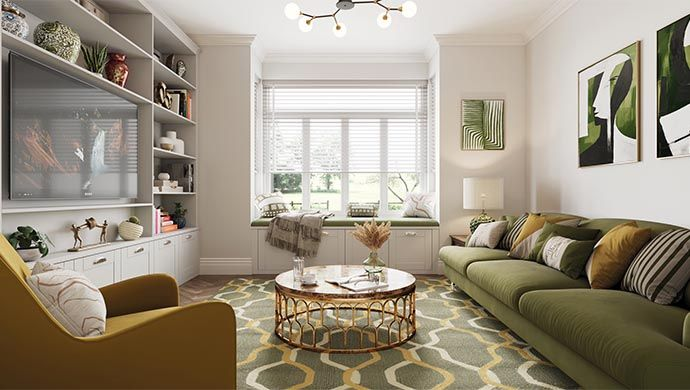
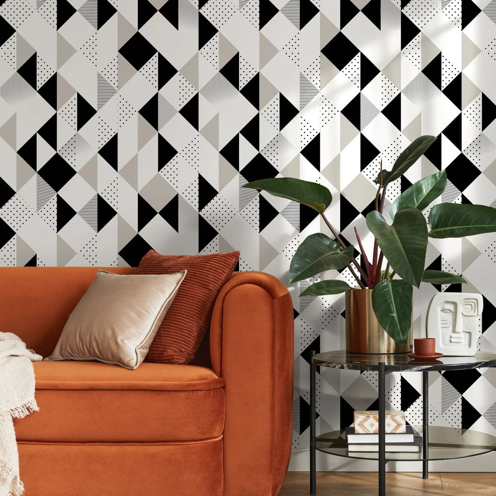

Personality
Jemilah to add.
Work
Consultant in compliance.
Hobbies
Jemilah to add.
Taste
I like to be comfortable and cozy at home. I like modern style, but not too sterile or uncomfortable. From the pictures saved so far: warm neutrals and soft textures (cream, sand, light oak) with earthy colour, olive green and terracotta. Jemilah to confirm.
CreamSandLight oakOliveTerracottaDusty rose
Rooms
Click a room to open its page. Rooms without pictures yet are waiting for Jemilah's saved ideas.


Bedroom - Jemilah
Cozy and calm: soft upholstered beds, light oak and warm neutrals.
Open Bedroom - Jemilah →

Livingroom - Jemilah
Living and dining space together: modern but soft, with earthy colour.
Open Livingroom - Jemilah →Pictures and links to come
Kitchen - Jemilah
Jemilah's kitchen ideas.
Open Kitchen - Jemilah →Pictures and links to come
Guest room - Jemilah
Jemilah's ideas for the guest room.
Open Guest room - Jemilah →